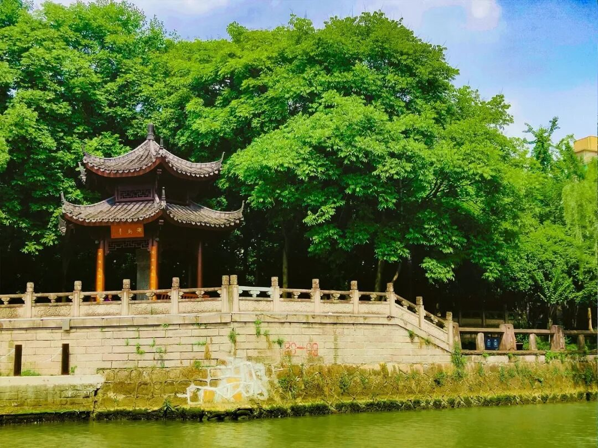

最忆是杭州

最忆是杭州
Three Days
“接天莲叶无穷碧，映日荷花别样红”
是行者们抵杭的炎炎盛夏，
“烟柳画桥，风帘翠幕，参差十万人家”
是人景相依的三吴都会，
“水光潋滟晴方好，山色空蒙雨亦奇”
是晴雨无休的如画西湖。
如此种种，都化为行者们脑海中的一句
“江南忆，最忆是杭州”。
“ The First Day ”
“ The Second Day ”
“ The Third Day”
余秋雨说：“杭州呈现出了一个贯通千年的人文宣言。这个宣言，曾经由钱镠亲自指导，由白居易、苏东坡参加起草，由白娘娘从旁润饰，又由今天的建设者们接笔续写。宣言的内容，很复杂，又很简单：关于美丽，关于自然，关于生态，关于人间。”
杭州之旅就此告一段落，
行者们背上行囊，向着苏州前进！

行者无疆实践团
扫码关注我们
在这个夏季，一起流眄苏杭！
来源 | 行者无疆实践团
文字 | 殷心怡
排版 | 王文通
审核 | 朱华玮 崔雨琪 温兆琪